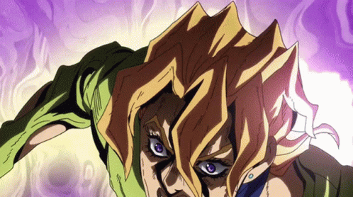
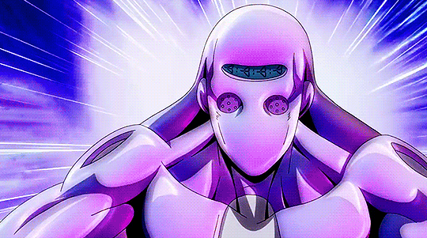

|
|
|
|  |
|
 |
En el año 2001, Koichi Hirose llega a Nápoles a petición de Jotaro Kujo para investigar a Haruno Shiobana, también conocido como Giorno Giovanna, que se revela es hijo de Dio Brando usando el cuerpo de Jonathan Joestar. Giorno roba la mochila de Koichi gracias a su propio Stand: Gold Experience, el cual le permite transformar objetos en criaturas vivientes. Giorno es atacado entonces por Luca "Ojo-lloroso", un miembro de la banda dominante de Nápoles llamada Passione, que muere al Giorno devolver su ataque con la pala con su Stand, Gold Experience.
En respuesta a lo ocurrido con Luca "Ojo-lloroso", Giorno se ve confrontado por Bruno Bucciarati, también miembro de la banda Passione, quien lo ataca con su Stand Sticky Fingers. Luego, una secuencia retrospectiva detalla el crecimiento de Giorno y cómo fue evolucionando de un tímido y frecuentemente maltratado chico en un adolescente con mucha más confianza. Excediendo las expectativas de Bucciarati y derrotándolo, Giorno establece una relación con Bucciarati al exponer un desagrado mutuo por las prácticas de Passione en el tratamiento de las drogas, en particular a los menores de edad. Bucciarati luego acepta ayudar a Giorno a infiltrarse en Passione.
Bucciarati explica a Giorno la estructura de Passione, y le explica que si desean acercarse al Jefe, requieren un rango más alto dentro de la mafia. Giorno se reúne con los compañeros de Bucciarati como parte de la Pandilla de Bucciarati y conoce a Narancia Ghirga, Guido Mista, Leone Abbacchio y Pannacotta Fugo. Con la muerte por "suicidio" de Polpo, se comienza a extender un rumor dentro de la organización de que él antes de morir, ocultó un tesoro cuyo valor aproximado es de 10000 millones de liras por lo que comienza una carrera por apoderarse del mencionado dinero. Mario Zucchero y Sale, dos miembros de Passione y a su vez usuarios de Stand se desplazan a la isla de Capri con el propósito de hacerse con el dinero antes que nadie, chocando contra la Pandilla de Bucciarati en el proceso, puesto que Polpo le confió a Bucciarati la ubicación del tesoro y Bruno busca usar ese dinero para ascender dentro de la organización para poder acercarse al Jefe de Passione.
Curiosidad: El autor quería que los protagonistas de esta parte sean mujeres, aunque su editor no lo dejó. Araki como venganza hizo que todos los personajes de Vento Aureo sean muy femeninos.
A pesar de la apariencia y actitud joven de Doppio, este tiene 33 años.
La intro de esta serie es la que más cambios tiene, lleando a tener 3 cambios: Traitor's Requiem V1, < a href= 'https://youtu.be/MIssWgfsGUk?si=RDpy-MLcBX5SbHeG' > Traitor's Requiem V2 y Traitor's Requiem V3